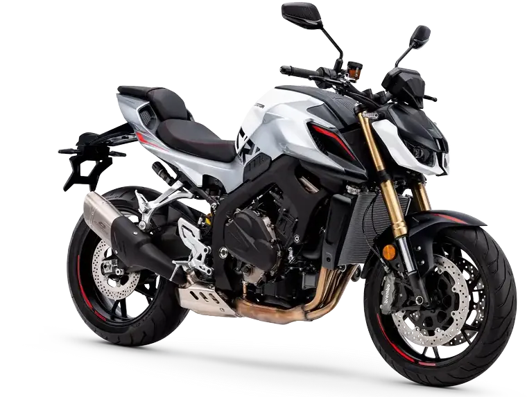
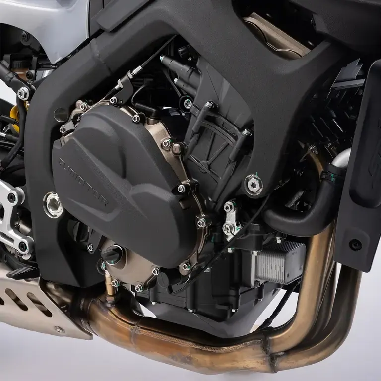
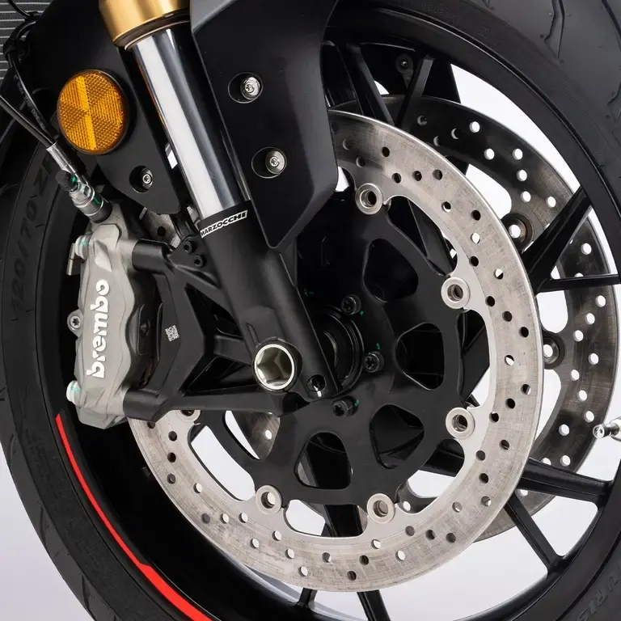
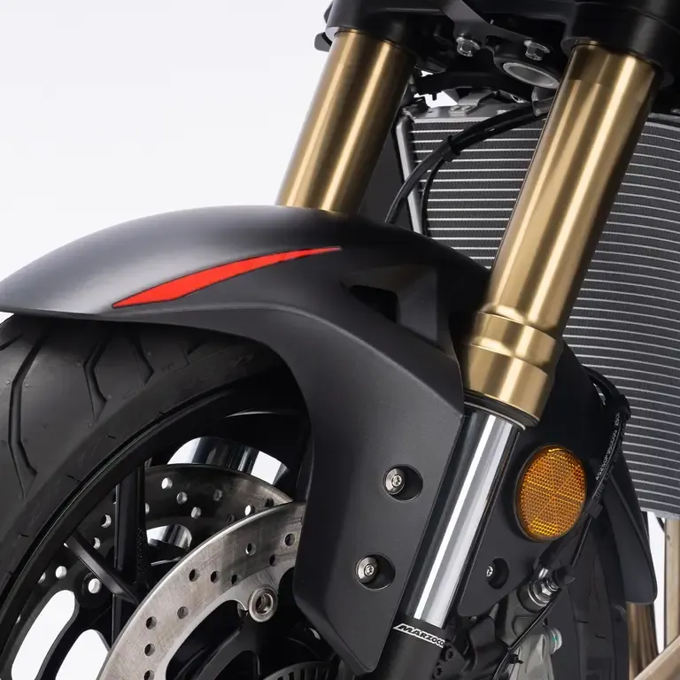

QJ Motor
SRK 800RR
A2 800 cc · 70 kW · Deportivas
Propuesta de OpsPilot para Expomoto Córdoba, en revisión. No es la web oficial: expomotocordoba.es




Motor tetracilíndrico en línea de 778 cc, 16 válvulas y DOHC. Dispone de tres modos de conducción (Rain, Normal y Sport) que adaptan la respuesta del motor al entorno y al estilo de conducción. Además, es limitable para el carnet A2 a 35 kW.
Equipa un sistema de frenado con pinzas Brembo de alto rendimiento que combina potencia, precisión y máxima seguridad. El ABS BOSCH 9.3MP con función CBC (Cornering Brake Control), regula la presión de frenado cuando la moto está inclinada, ayudando a mantener la estabilidad y la trayectoria en curva.
Suspensión delantera: Horquilla invertida Marzocchi de 41 mm. Recorrido 110 mm. Multi-regulable en precarga, extensión y compresión. Suspensión trasera: Monoamortiguador Marzocchi multi-regulable en precarga (pomo remoto) y extensión.
El quickshifter bidireccional de la SRK 800 te permite subir y bajar marchas sin usar el embrague ni levantar el pie del acelerador, manteniendo la potencia constante.
Gracias a la conectividad mirroring, permite replicar funciones clave del smartphone en la pantalla, facilitando el acceso a navegación, llamadas o información relevante sin distracciones.